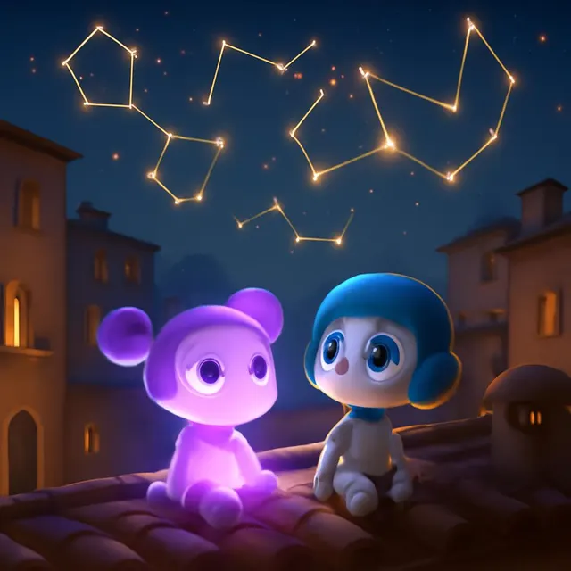
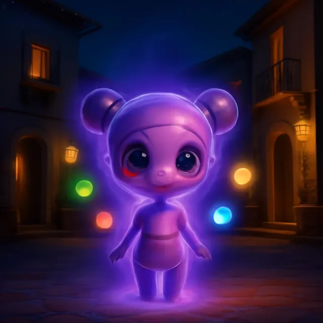
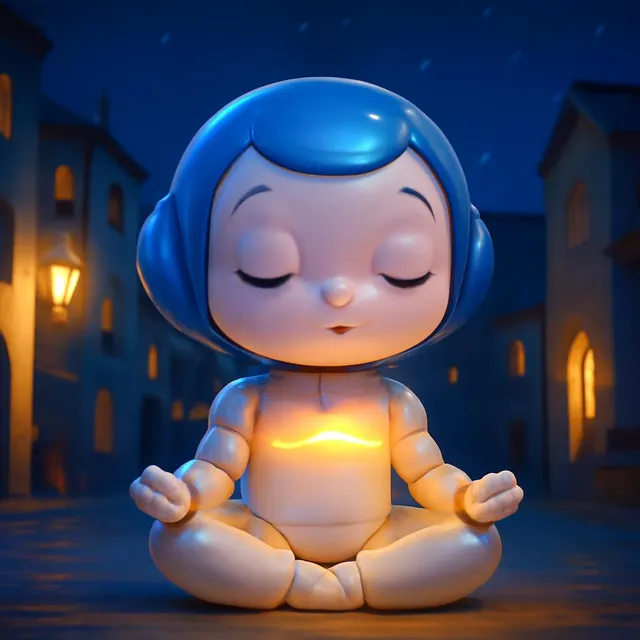
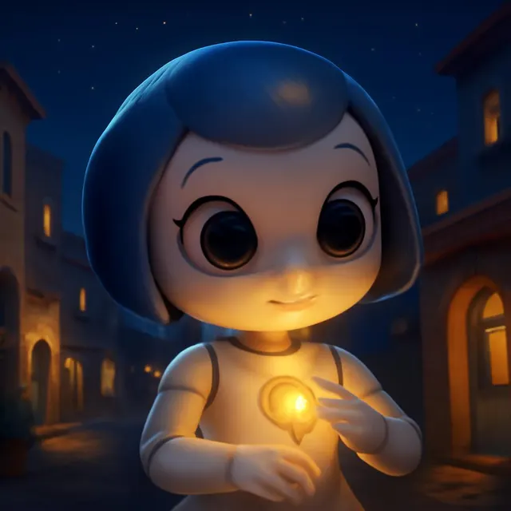

Körperkosmos
Dein Körper und der Himmel erzählen die gleiche Geschichte. Aura und Nova begleiten dich.
Tipp: Tippe Aura oder Nova an.

Dein Geburtsbild
Wähle deinen Geburtstag. Aura zeigt dir dein Sonnenzeichen und was es im Körper spiegelt. Nichts wird gespeichert.
Das Sonnenzeichen ist hier nach Datum gerechnet. An Grenztagen und für Mond, Aszendent und Häuser hilft der genaue Körperkosmos-Rechner.

Fünf Elemente
Jede Kraft nährt die nächste. Tippe ein Element an.
Augen zu
Mit geschlossenen Augen spürst du mehr. Aura spricht dich leise durch. Ein Gong sagt dir, wann du weitergehst.
Die ausführliche Übung für Behandlerinnen und Behandler: Augen zu, mit Notiz.
Sofort-Ruhe
Kleine Griffe für den Moment, in dem alles zu viel ist. Eins reicht. Nimm, was gerade geht.
Kälte nur kurz und angenehm kühl, nie schmerzhaft. Kälte im Gesicht verlangsamt kurz den Herzschlag: bei Herzproblemen, niedrigem Blutdruck, in der Schwangerschaft oder bei Raynaud nur kaltes Wasser an den Händen, kein Eis. Wird dir schwindlig: aufhören und normal atmen. Diese Griffe beruhigen, sie ersetzen keine Behandlung. Wenn es nicht besser wird: Die Dargebotene Hand 143, Notfall 144.
Atem und Puls
Sechs ruhige Atemzüge pro Minute. Nova atmet mit dir: fünf Sekunden ein, fünf Sekunden aus.


Den Puls spüren, wie in der chinesischen Medizin
Drei Finger sanft an die Innenseite des Handgelenks, unterhalb vom Daumen. Erst leicht, dann mittel, dann etwas tiefer drücken.
Zähle die Schläge während eines ruhigen Atemzugs. Die alte Lehre nennt vier bis fünf als ruhiges Mass. Spüre auch: tief oder oberflächlich, weich oder gespannt.
Ein Spiegel für dich, keine Diagnose. Herzstolpern, Aussetzer, sehr schneller oder sehr langsamer Puls: bitte ärztlich abklären. Notfall 144.
Körperkosmos ist ein Spiegel für Körper und Zeit. Er ersetzt keine ärztliche oder psychologische Behandlung und stellt keine Diagnose. Notfall 144 · Die Dargebotene Hand 143 · Pro Juventute 147.